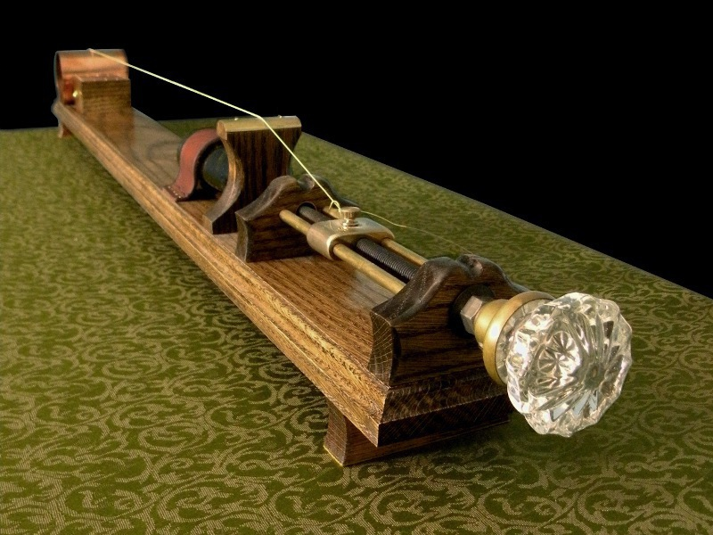
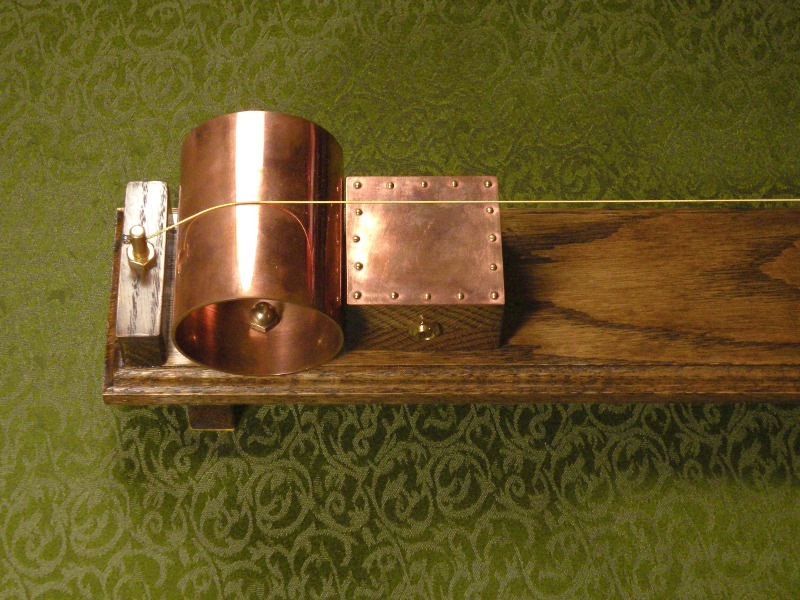
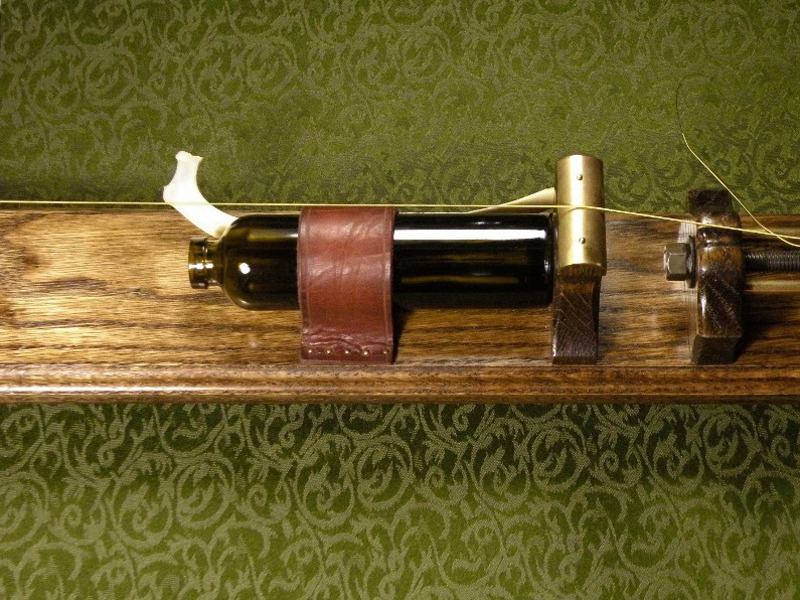
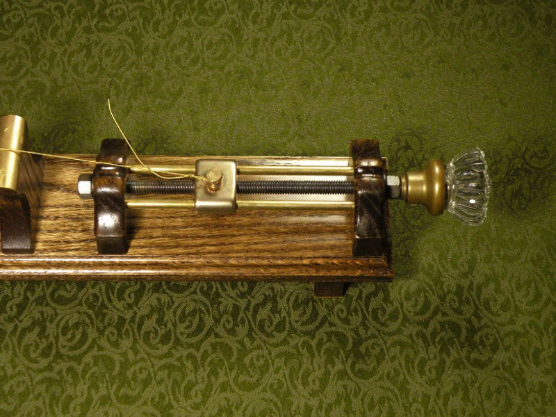

Electric Monochord Zither Electric Monochord Zither
Electric Monochord Zither Electric Monochord ZitherA diddley bow is an improvised blues instrument with one string, usually played with a stick, or "hammer," to strike the string and a glass or metal slide to alter the note. The typical construction method involves hammering a nail into each end of a 2x4, twisting a guitar string or other piece of wire around the nails, then raising the string away from the 2x4 using a bottle or jar as prop. Loving the freedom of expression which a diddley bow affords the player, I set out to make one; once I got into the workshop, however, something rather different took shape.
The instrument I ultimately constructed could hardly be said to be "improvised," and it bears as much in common with other monochord world instruments (such as the Vietnamese dan bau, or the Japanese ichigenkin) as with the diddley bow. I had just finished making several electrical apparatus when I began the project, so many of the materials (and ideas) left over from those projects found their way into this one. Therefore, the primary construction materials are oak, brass and copper.
Often, the muted sound output of a diddley bow is magnified with a resonator made from a sardine tin or other can. I used a piece of copper pipe 4" in diameter. My original design employed two equal pieces of copper pipe around two feet apart to lift the string from the body of the instrument. Not being a musician, I did not realize at the time that this would sound terrible. In essence, I had put a resonator at either end of the string; thus, as the frequency at which one pipe was resonating increased, the pipe on the opposite end resonated at a correspondingly lower frequency. Two equal and opposing notes were coming out of the instrument, so one resonator had to go.
While the instrument emits a surprising amount of sound acoustically, thanks to the copper pipe resonator, I simply could not achieve the sound I sought without amplification. My options were an electromagnetic pickup and nickel-wound strings, as on electric guitars; or a microphone pickup as used for acoustic amplification. I happened to have two piezo tweeters from an old set of bookshelf speakers gathering dust, and knowing that a piezo speaker can be used in reverse as a microphone, I built a small box next to the resonator to house them. Made from oak, like the main body of the instrument, and topped with a piece of copper flashing, the small box seen in the photo above hides two piezo elements wired in parallel to the 1/4" phone jack in the front.
Once the instrument was built, I recognized a certain Victorian eeriness to it. That, in addition to the influence of the short stories of Edgar Allan Poe (which I was re-reading at the time) decided me what to use as hammer and slide for playing the instrument. The slide is an empty absinthe bottle; though the bottle is modern, I cut the threaded portion off with a diamond wheel to make it look antique. The hammer is the rib bone of a deer, found in the woods near my house. A leather strap holds both securly to the instruement when not in use.
Created by Sean Corron, April 2, 2011.